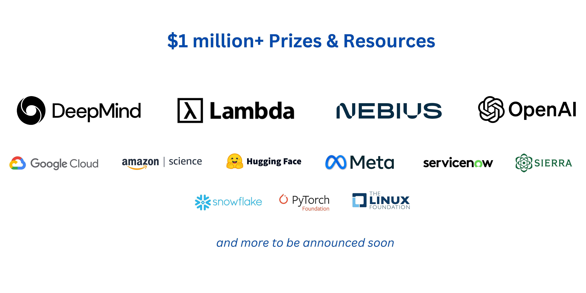
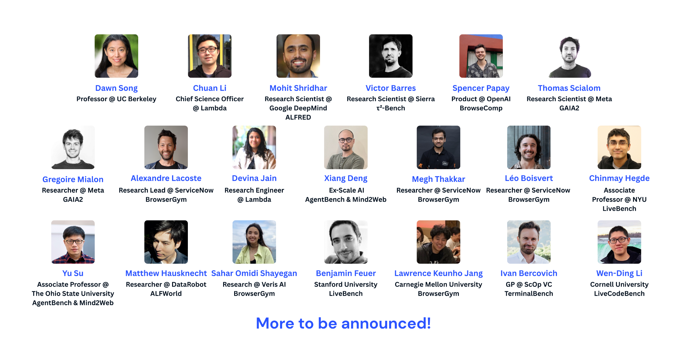

Lambda
$400 cloud credits to every individual or team

Compete for over $1M in prizes and resources. This two-phase competition challenges participants to first build novel benchmarks or enhance existing benchmarks for agentic AI (Phase 1), and then create AI agents to excel on them (Phase 2)—advancing the field by creating high-quality, broad-coverage, realistic agent evaluations as shared public goods.
Prefer a structured walkthrough? These long-form resources provide a complete explainer.
Watch Intro Video View SlidesWhether you're building AI systems, integrating them into applications, or simply using AI products, a central question arises: how well does this AI system perform on the tasks we care about? The only reliable answer is through evaluation—testing performance on well-defined benchmarks. You can only improve what you can measure!
Yet, as AI evolves toward agentic systems—AI agents capable of reasoning, taking actions, and interacting with the world—our current benchmarking methods for simple LLM model-level evaluation fall short:
Our vision for streamlined agentic AI evaluation is a unified space where the community can come together to define the goalposts of agentic AI—through benchmarks that are:
Through the AgentX–AgentBeats competition, we aim to bring the community together to create high-quality, broad-coverage, realistic agent evaluations—developed in an agentified, standardized, reproducible, and collaborative way—as shared public goods for advancing agentic AI.

$400 cloud credits to every individual or team
$50 inference credits to every individual or team
$100 cloud credits to every individual or team
$50 inference credits to every individual or team
Additional resources will be announced soon.
Up to $50k prize pool in GCP/Gemini credits to be shared among the winning teams.
Up to $50k prize pool in inference credits to be shared among the winning teams.
OpenAI credits of $10,000, $5,000, and $1,000 will be awarded to the 1st, 2nd, and 3rd place winners in each of the two tracks: the Research Track and the Finance Agent Track.
$750 in cloud credits for each winning team.
Up to $10k prize pool in AWS credits to be shared among the winning teams.
Hugging Face credits of $5,000, $3,000, and $2,000 will be awarded to the 1st, 2nd, and 3rd place winners in the custom track—the OpenEnv Challenge.
Each winning team member who is currently a student will receive:
Additional prize partners will be announced soon.
To realize this vision, we are introducing AgentBeats, an open-source platform and a new paradigm for evaluating AI agents. Rather than asking you to adapt your agent to fit a rigid benchmark, AgentBeats flips the model on its head: we turn the benchmark itself into an agent, i.e., agentifying the benchmark.
A 🟢 green (or evaluator) agent provides a specific agent evaluation benchmark including the environment, a set of tasks, and the evaluator. Think of it as the proctor, the judge, and the environment manager all rolled into one. When you build a green agent, you are not just defining a set of tasks; you are creating a fully automated evaluation system.
A 🟣 purple (or competing) agent is the agent under test such as a coding assistant, a research agent, or a personal planner agent. The purple agent will interact with the green agent to demonstrate its abilities and get evaluated.
AgentBeats addresses the big problems in agentic AI evaluation by:
Want a detailed walkthrough? Watch the competition intro video or skim the slides.
Oct 16, 2025 to Jan 31, 2026
Participants build green agents that define assessments and automate scoring. Pick your evaluation track:
Feb 16 to March 31, 2026
Participants build purple agents to tackle the select top green agents from Phase 1 and compete on the public leaderboards.
A red-teaming and automated security testing challenge.
Learn more about the challenge—full details and guidelines are available here.
Phase 1 Deadline: Jan 31, 2026
Learn more about the τ²-Bench Challenge—full details and guidelines are available here.
Deadline: March 30, 2026
SOTA Environments to drive general intelligence.
Learn more about the challenge—full details and guidelines are available here.
Deadline: March 30, 2026
More custom tracks to be announced...
To be announced soon
| Date | Event |
|---|---|
| Oct 16, 2025 | Participant registration open |
| Oct 24, 2025 | Team signup & Build Phase 1 |
| Jan 31, 2026 | Green agent submission |
| Feb 1, 2026 | Green agent judging |
| Feb 16, 2026 | Phase 2: Build purple agents |
| March 30, 2026 | Purple agent submission |
| March 31, 2026 | Purple agent judging |
